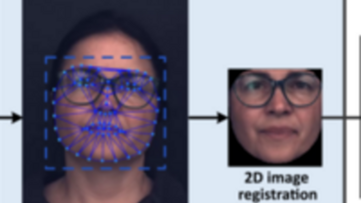
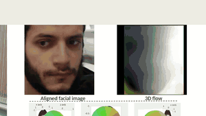
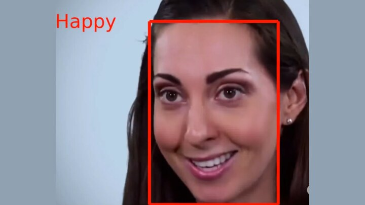
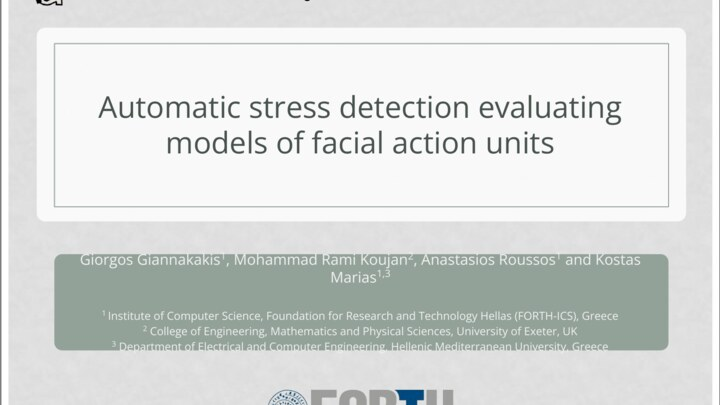
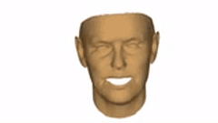
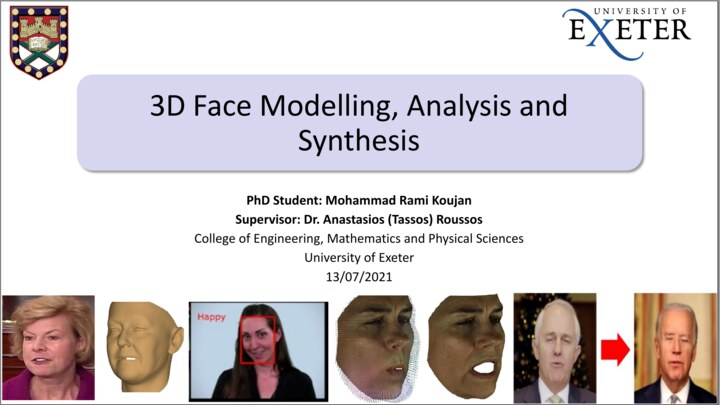

I am a Manager of Machine Learning Engineering at Snap Inc. in London, leading a team building on-device generative AI for human-centric AR. Our work ships to the hundreds of millions of people on Snapchat (953M+ MAU) and to creators on Lens Studio Pro and EasyLens.
My research and engineering focus on controllable diffusion models for high-fidelity human image and video generation, distillation of large image and video diffusion models into real-time, lightweight lenses on mobile GPUs/NPUs, and the broader stack of neural avatars, virtual try-on, and 3D face/body reconstruction. I have shipped several generative AR features at Snap and am co-inventor on a number of US and UK patents in real-time face and body synthesis.
I hold a PhD in Computer Vision and Machine Learning from the University of Exeter (2021) and an MSc in Computer Vision and Robotics (VIBOT, Erasmus Mundus, with Distinction). Previously I worked at Ariel AI (acquired by Snap in 2020), at Facesoft — an Imperial College London spin-out whose technology assets were acquired by Huawei — and as a visiting researcher in Imperial's iBUG group with Prof. Stefanos Zafeiriou. I have peer-reviewed publications at CVPR, FG, IJCB, and SIGGRAPH (371 Google Scholar citations as of May 2026).
If you'd like to chat about generative AI, AR, or hiring, reach out at mhd.kou@gmail.com.
| Apr 2026 | US patent 12,602,850 granted: Generative AI Virtual Clothing Try-On. |
| Late 2025 | Character Skin Generator shipped in Lens Studio Pro and as Body Avatar in EasyLens — a flagship real-time on-device avatar feature. |
| 2025 | US patents 12,499,638 (Stylizing a Whole-body of a Person) and 12,437,367 (Real-time Try-on Using Body Landmarks) granted. |
| Jul 2025 | Promoted to Manager, Machine Learning Engineering — leading a GenAI team at Snap. |
| Jan 2024 | Promoted to Senior Machine Learning Research Engineer at Snap. |
| 2022 | Automatic Stress Analysis from Facial Videos based on Deep Facial Action Units Recognition published in Pattern Analysis and Applications (Springer). |
| 2021 | Head2Head++: Deep Facial Attributes Re-targeting published at IEEE IJCB 2021. |
| Mar 2021 | PhD awarded — University of Exeter. Thesis: 3D Face Modelling, Analysis and Synthesis. |
| 2020 | Four papers published at IEEE FG 2020 (Head2Head, ReenactNet, Real-Time Facial Expression Recognition, Automatic Stress Detection). |
| 2020 | DeepFaceFlow: In-the-Wild Dense 3D Facial Motion Estimation published at IEEE/CVF CVPR 2020. |
| Sep 2020 | Joined Snap Inc. through the acquisition of Ariel AI. |
| 2018 | Combining Dense Non-Rigid Structure-from-Motion and 3D Morphable Models for Monocular 4D Face Reconstruction published at ACM SIGGRAPH 2018. |
371 Google Scholar citations as of May 2026. Authors: own name in bold.
 |
Automatic Stress Analysis from Facial Videos based on Deep Facial Action Units Recognition. Giannakakis, Mohammad Rami Koujan, Roussos. Pattern Analysis and Applications, Springer, 2022. |
|
Head2Head++: Deep Facial Attributes Re-targeting. Mohammad Rami Koujan, Doukas, Sharmanska, Roussos, Zafeiriou. IEEE IJCB 2021. |
|
 |
DeepFaceFlow: In-the-Wild Dense 3D Facial Motion Estimation. Mohammad Rami Koujan, Roussos, Zafeiriou. IEEE/CVF CVPR 2020. |
|
Head2Head: Video-based Neural Head Synthesis. Mohammad Rami Koujan, Doukas, Roussos. IEEE FG 2020. |
|
|
ReenactNet: Real-time Full Head Reenactment. Mohammad Rami Koujan, Doukas, Roussos, Zafeiriou. IEEE FG 2020. |
|
 |
Real-Time Facial Expression Recognition "In the Wild" by Disentangling 3D Expression from Identity. Mohammad Rami Koujan, Alharbawee, Giannakakis, Pugeault, Roussos. IEEE FG 2020. |
 |
Automatic Stress Detection Evaluating Models of Facial Action Units. Giannakakis, Mohammad Rami Koujan, Roussos, Marias. IEEE FG 2020. |
 |
Combining Dense Non-Rigid Structure-from-Motion and 3D Morphable Models for Monocular 4D Face Reconstruction. Mohammad Rami Koujan, Roussos. ACM SIGGRAPH 2018. |
 |
3D Face Modelling, Analysis and Synthesis. Mohammad Rami Koujan. PhD Thesis, University of Exeter, 2021. |
US 12,602,850 — Generative AI Virtual Clothing Try-On.
Generative virtual clothing try-on combining diffusion with pose/identity preservation for high-fidelity garment transfer.
US 12,499,638 — Stylizing a Whole-body of a Person.
Diffusion-based full-body stylization for AR lenses, enabling real-time digital character transformations on-device.
US 12,437,367 — Real-time Try-on Using Body Landmarks.
On-device real-time virtual try-on driven by body-landmark estimation; powers garment try-on lenses in Snapchat.
US 18/429,251 — Automatic Image Generation Using Latent Structural Diffusion.
Latent-structural-diffusion approach for controllable, automatic image generation.
US 18/226,929 — Generating Ground Truths for Generative AI Applications.
Automated curation of training-time ground truths for large-scale generative AI model training.
GB 2594970 — Three-dimensional Facial Motion Estimation.
Sequential GANs combined with 3D Morphable Models for real-time 3D facial motion estimation from monocular video.
Additional patents pending in real-time on-device generative AI for human image/video synthesis and AR lenses.
Real-time on-device generative AI that transforms users into stylised digital characters in AR. Architected and shipped the core ML pipeline in Lens Studio Pro.
Shipped · Lens Studio Pro
Consumer-facing version of Character Skin Generator deployed as a building block in Snap's no-code lens platform, EasyLens.
Shipped · Snapchat / EasyLens
Optimised on-device virtual try-on for upper garments, deployed natively in the Snapchat app. Co-invented; protected by US patent 12,437,367.
Shipped · Snapchat / Lens Studio
| Sep 2020 – Present | Snap Inc., London — Manager, Machine Learning Engineering (Jul 2025 – Present); previously Senior MLRE (Jan 2024 – Jun 2025) and MLRE (Sep 2020 – Dec 2023). Generative ML Platform. |
| Jul – Sep 2020 | Ariel AI, London — Computer Vision Scientist. Joined Snap through company acquisition. |
| Jul 2019 – May 2020 | Facesoft (Imperial College London spin-out), London — Computer Vision Scientist. Technology asset acquired by Huawei. |
| Jun 2018 – Aug 2019 | Imperial College London — iBUG (Prof. Stefanos Zafeiriou) — Visiting Researcher. |
| Jun 2017 – Jun 2019 | University of Exeter — Research & Teaching Assistant. |
| Jan – Jun 2017 | EPSRC Proteus IRC, Edinburgh — Research Assistant. |
| Jun – Sep 2016 | Inria, Nancy — Research Assistant. |
Full chronology in the CV.
| 2017 – 2021 |
PhD, Computer Vision and Machine Learning — University of Exeter, UK. |
| 2015 – 2017 |
MSc, Computer Vision and Robotics (VIBOT — Erasmus Mundus) — Heriot-Watt University, University of Girona & Université de Bourgogne. |
| 2009 – 2014 |
BSc, Communications and Information Engineering — Yarmouk Private University, Syria. |
Languages. English (full professional) · Arabic (native) · French (limited working) · Catalan (elementary).